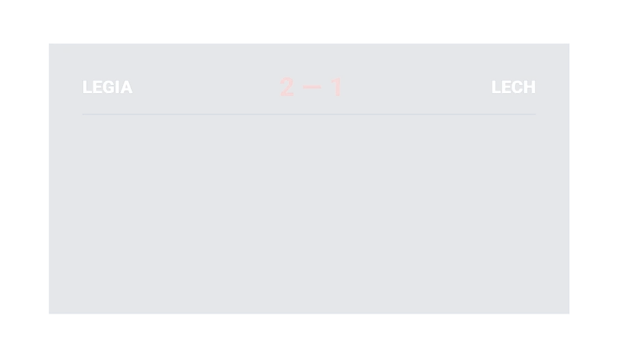
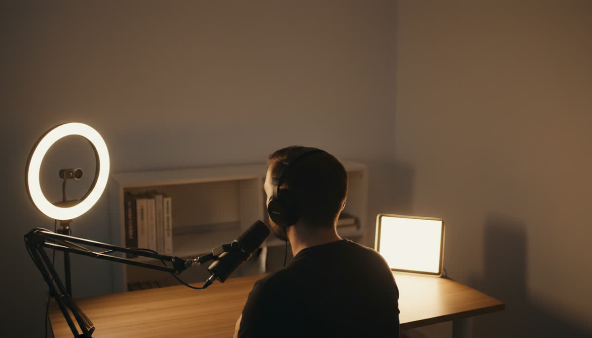
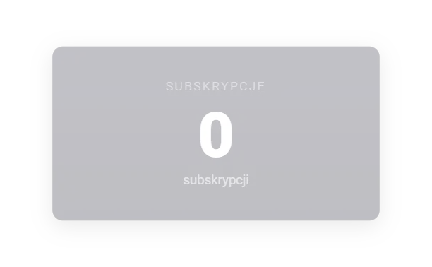
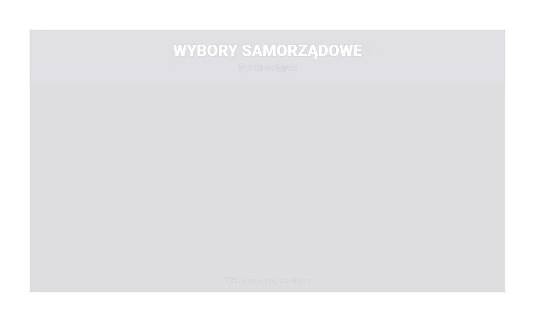

Voice control is live
Say it.
Put it on screen.
A pre-rendered graphic is baked — changing one digit means After Effects and a re-export, three minutes while you are on air. Pellar renders from a verified template library, live.
- Template library
- Working
- Verify step
- Working
- Voice control
- Live
- Local models
- In testing


Sample dataBuilt by Veles Productions — we make virtual studios and live graphics for television.
Who Pellar is for

Streamers & creatorsStream
One operator, one machine, no time to open After Effects. Scorebugs, polls and counters that update while you keep talking.
The creator path ↓ Broadcasters
Broadcasters
Broadcast
A template library your designers own, a verify step before air, and roles that match the people already in your gallery.
The control-room path ↓Broadcast graphics.
No blank canvas.
Lower thirds, maps, tables, charts, scorebugs. Each is built once as a function, then reskinned to your brand.
Real Pellar templates rendering with sample data over stand-in footage. Not mockups — that is them running.

The number changes,
the graphic changes
Nothing is baked in. A correction costs a sentence, not a re-export.


Your brand book,
not ours
One function, a different skin per client. Your designer guarantees the pixels.


Hands stay
where they are
Voice, text or the panel — whichever is fastest in the moment.

Dead air is survivable.
A wrong number is not.
A gap on screen is a bad night. A figure nobody checked, broadcast under your name, is a correction and a clip that outlives the bulletin.
Every template
passes verify
Formatting, overflow, safe area, and whether it conforms to the standard the rest of your library is built on. Nothing reaches the live system unchecked.

- FormattingType, spacing, weights
- OverflowNo string breaks the box
- Safe areaInside title and action safe
- StandardMatches the library spec
The check is also a record — what was verified, and when. We describe the verification step; we do not claim compliance on your behalf.
It fits the gallery
you already run
An operator builds it. An editor checks it. A vision mixer takes it. Each gets the permissions that match what they already do.
-
01
Operator
Builds and cues
Drives the panel by voice, text or hand. Sees preview first.
-
02
Editor
Checks and approves
Reviews what is queued against what is going out.
-
03
Designer
Owns the library
Curates templates and decides what may reach the live system.
-
04
Output
Into the stack you own
Browser source or NDI, into your switcher or your stream.
Tier and role decide what can reach air. Who can build, who can publish, who can only preview — set per account, not per good intention.
04 — The fast path
Keep presenting.
Pellar takes the cue.
Voice is for the moment you cannot stop the show to open a menu. Say the change; Pellar updates the graphic while you stay with your audience.
“Pellar, show the latest standings.”
- Voice control live now
- Text and manual control stay available
No outside
dependency on air
A broadcast cannot be hostage to somebody else’s API being up, and some newsrooms cannot send a frame outside the building. Pellar is being built to render, and to listen, on machines you own.
Local model support is in testing — an architectural commitment, not a shipped feature. We will say so plainly when it lands.
Diagram: three local units — GPU render running locally, voice model in testing, and data that never leaves the building.
Verticals Pellar builds templates for


Works with the tools
you already run
Pellar comes out as a browser source or over NDI — the two things every one of these already accepts. We only mark an app tested once it has passed end to end, so here is exactly where each one stands.
- OBS StudioTesting now
- vMixTesting now
- NDIOutput verified
- StreamlabsNext, after OBS
- XSplitNext, after vMix
- Stream DeckVia OBS
 OBS StudioTesting now
OBS StudioTesting now
 NDIOutput verified
NDIOutput verified
 StreamlabsNext, after OBS
StreamlabsNext, after OBS
 XSplitNext, after vMix
XSplitNext, after vMix
 Stream DeckVia OBS
Stream DeckVia OBS
Logos identify their owners; no partnership is implied.
Made by people who
put graphics on air
Veles Productions builds virtual studios and live broadcast graphics for television. Pellar is that knowledge turned into a system — which is why it argues about safe areas and approval chains, not prompts.
- Origin A broadcast production company, not a software startup
- On this page Every graphic shown is a real template rendering
- Programme NVIDIA Inception member
What would you put
on screen first?
Leave your address and we will let you know when you can test it. Tell us what you make and we will start with the graphics you cannot do today.